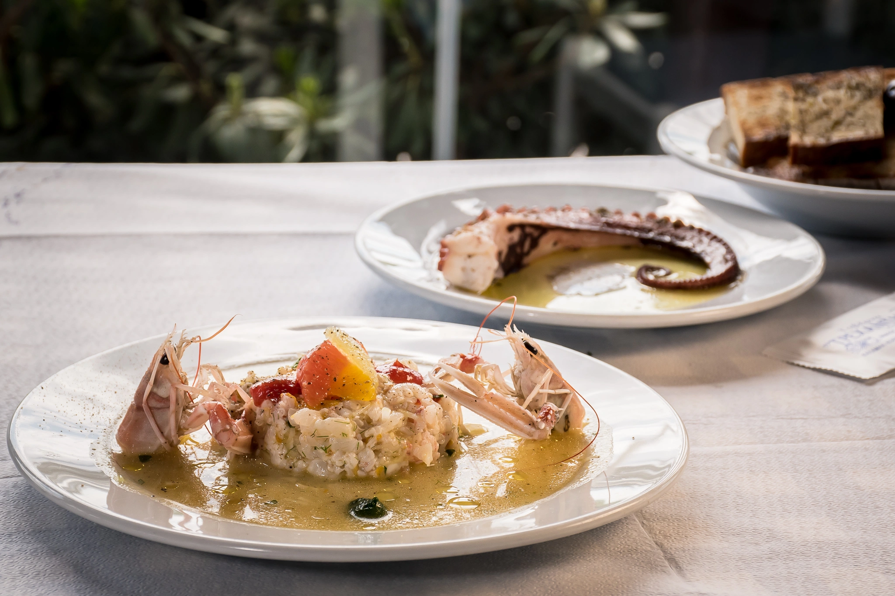

Το Τρεχαντήρι δεν είναι μια ψαροταβέρνα με άποψη για τη θάλασσα — είναι μια οικογένεια που ζει από αυτήν, τέσσερις γενιές τώρα. Ο Δημήτρης Μαγνήσαλης, καπετάνιος και ιδιοκτήτης 4ης γενιάς, βγαίνει ο ίδιος κάθε μέρα στον Σαρωνικό κόλπο με το σκάφος του.
Ό,τι φέρει, το βρίσκετε στον πάγκο μας το ίδιο βράδυ. Δεν παραγγέλνουμε ψάρι από αλλού όταν η θάλασσα δίνει — το σκάφος βγαίνει, το δίχτυ ρίχνεται, και το τραπέζι σας περιμένει ό,τι φέρει η μέρα.
Η χρονιά που η οικογένεια Μαγνήσαλη άνοιξε την πρώτη ψαροταβέρνα στο Καλαμάκι.
Ο Δημήτρης Μαγνήσαλης συνεχίζει σήμερα ό,τι ξεκίνησαν οι παππούδες του, βγαίνοντας ο ίδιος στη θάλασσα κάθε μέρα.

ΤΟ ΣΚΑΦΟΣ
Το όνομά μας είναι και η δουλειά μας: το τρεχαντήρι, η παραδοσιακή ξύλινη ψαρόβαρκα του Σαρωνικού κόλπου, βγαίνει καθημερινά από το Καλαμάκι. Καμία σκηνοθεσία, κανένας μεσάζοντας — μόνο η θάλασσα, το σκάφος και το τραπέζι σας.
Το ψάρι στο πιάτο σας βγήκε από τη θάλασσα το ίδιο πρωί, με το δικό μας σκάφος.
Τέσσερις γενιές της οικογένειας Μαγνήσαλη, ένα σκάφος, μία ταβέρνα.
Καλαμάκι, Ίσθμια — λίγα μέτρα από το νερό, καμία βιασύνη.
Καλαμάκι, Ίσθμια — λίγα μέτρα από το νερό.